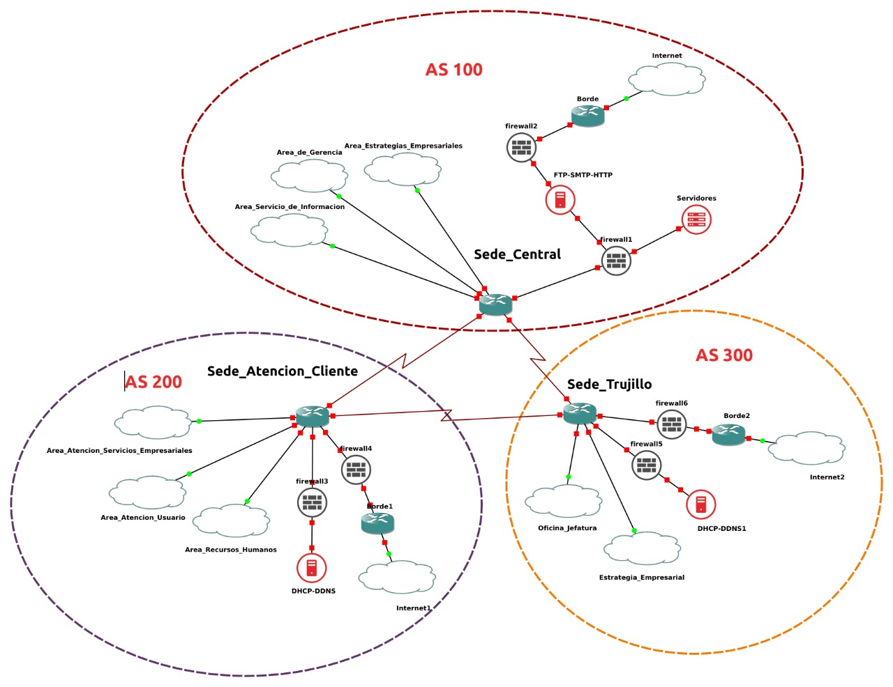
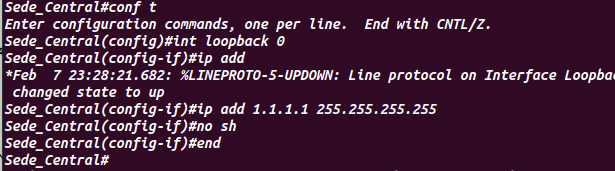

Universidad Nacional de Ingeniería
Facultad de Ciencias
Escuela Profesional de Ciencias de la Computación
Administración de Redes
Proyecto Capstone: Internetworking
Para una mejor administración de la red de la empresa se optó por el uso del protocolo de enrutamiento dinámico OSPF dentro de una sede y BGP para la comunicación entre estas sedes. Solo para el caso del acceso a internet se usó un enrutamiento estático.
Por otro lado, mediante el protocolo BGP solo se anuncia las subredes necesarias a los demás sistemas autónomos (sedes).
Como ejemplo se va ha mostrar las configuraciones hechas en la sede central.
Creación del loopback
Se crea una sesión iBGP, eBGP con las demás sedes, se anuncia las redes que quieres que conozcan las demás sedes y finalmente se informa a los switch multicapas que si quieren acceder a una red externa tienen que pasar el router de la sede central.
Verificamos las redes aprendidas en la tabla de enrutamiento
Se crea un id para el router, generamos una relación de adyacencia con los routers vecinos y se indica el área al que pertenece.
Para que el sistema tenga tolerancia a fallos se establecieron enlaces redundantes entre switch multicapa y router. Además, se dividió el tráfico saliente del switch multicapa donde una parte pasa por un enlace y el resto por el otro enlace. Como ejemplo se muestra al área de atención a servicios empresariales.

Se crea una lista de acceso donde se define a qué tráfico se le va aplicar la política.
Con route-map se indica que se debe hacer con el tráfico establecido en la política. Para nuestro caso vlan 110 y 130 irán por la interfaz 1 y vlan 120 por la interfaz 2.
Y finalmente se aplican las políticas en la interfaz de origen ( donde se recibe el tráfico).
Verificando la ruta del tráfico